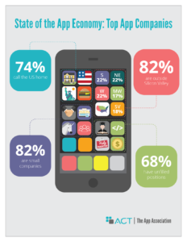

Pelican 靜態網頁產生器
Pelican 是一種靜態網頁產生程式, 以 Python3 編寫, 可以將作者所編輯的 reStructuredText 或 Markdown 檔案, 配合網站 Template 及設定檔案, 轉換為一組網誌 html 超文件, 只需要 WWW 伺服器就可以在網站上呈現, 目前的 Github Pages 服務應該最適合靜態網誌的寄存.
Pelican 是一種靜態網頁產生程式, 以 Python3 編寫, 可以將作者所編輯的 reStructuredText 或 Markdown 檔案, 配合網站 Template 及設定檔案, 轉換為一組網誌 html 超文件, 只需要 WWW 伺服器就可以在網站上呈現, 目前的 Github Pages 服務應該最適合靜態網誌的寄存.
Apple launches app development curriculum for high school and community college students.
Code4Future will work with them to get it rolled out to the community.
EducationPlanner is a great starting point. Identify your skills and interests and then explore some suitable careers that you may enjoy.
The smell of a flower – The memory of a walk in the park – The pain of stepping on a nail. These experiences are made possible by the 3 pounds of tissue in our heads…the BRAIN!!
Neuroscience for Kids: http://faculty.washington.edu/chudler/neurok.html is a website for all students and teachers to discover the exciting world of the brain, spinal cord, neurons and the senses. Use the experiments, activities, and games to learn about the nervous system.
http://actonline.org/wp-content/uploads/App_Assoc_TPP_paper.pdf
In existence less than a decade, the mobile app industry has experienced explosive growth alongside the rise of smartphones. As the most rapidly adopted technology in human history, these devices have revolutionized the software industry.
The App Association’s 2016 State of the App Economy report provides information and statistics on this innovative industry that continues to grow while creating jobs and revolutionizing how consumers work, play, and manage their health.

Code is another form of communication, a language. Learning to program is just like learning any other language. The earlier you start, the easier it is.
Coding is much more than a technical skill. It allows kids to interact in new ways with their digital worlds and become makers. Learning to code has been shown to strengthen computational thinking skills, and in the process, it’s giving kids an advantage in subjects like math and writing. It also helps foster creativity and organizational skills. And when they’re making amazing projects on their own, kids feel more confident in themselves and believe in their ability to create instead of consume technology.
http://www.tynker.com/blog/articles/ideas-and-tips/how-coding-can-help-your-child-excel/
假如您在 2012 年入手了幾台 HP TouchSmart 320-1038tw 桌上型電腦, 當時在 Windows 7 的操作系統下, 觸控螢幕可能發揮不了太多功能, 即便您已經配合保固期內的自動升級成 Windows 8.1, 觸控螢幕卻因為 原廠該型的驅動程式支援網站中, 已經找不到支援 Windows 8 以上的觸控螢幕的驅動程式, 加上在台灣 2016 年 7 月 29 日之前免費升級成 Windows 10 操作系統的檢查程式不斷告訴您, HP TouchSmart 320-1038tw 硬體無法升級成 Windows 10, 或許您已經選擇相信微軟, 決定要購買新的電腦了?